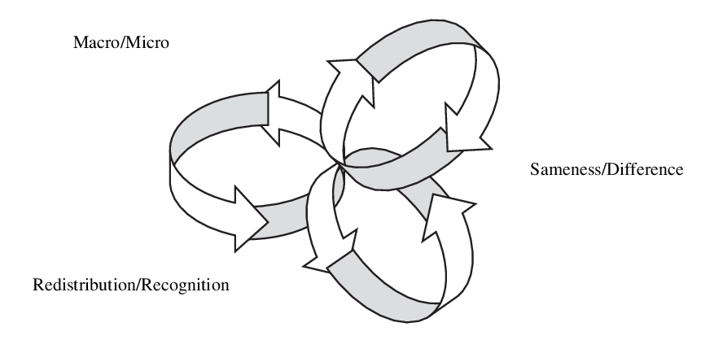
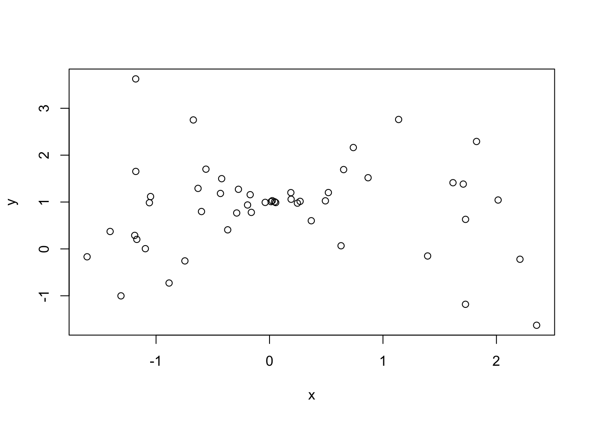

DATA 202 - Week 6
Bivariate analysis
Center for Applied Data Science and Analytics
Part I: Context
Understanding the social in justice
Building theories and empirical inquiries around various injustices requires a solid foundation.
One method is to read recent articles in peer-reviewed journals.
Another method is to explore the various ways one may view injustice.
From a logical perspective, you may test the validity of certain claims.
How should we define social justice?
Identify two to three definitions of social justice to share.
- Locate a few open source articles or periodicals.
What are the similarities between the different definitions?
What are the differences between the different definitions?
Framing social justice
There are many different frameworks that have been developed to examine social justice.
North (2006), as one example, discuss three spheres of social justice in the article “More Than Words? Delving Into the Substantive Meaning(s) of Social Justice in Education.” The abstract reads as follows:
“At the dawning of the 21st century, the term”social justice” is appearing in numerous public texts and discourses throughout the field of education. However, and as Gewirtz argued in 1998, the conceptual underpinnings of this catchphrase frequently remain tacit or underexplored. This article elaborates Gewirtz’s earlier “mapping” of social justice theories by examining the tensions that emerge when various conceptualizations of social justice collide and, in turn, their implications for the field of education. By presenting a model of the complex, fraught interactions among diverse claims about social justice, the author seeks to promote continued dialogue and reflexivity on the purposes and possibilities of education for social justice.”

Three Spheres of Social Justice by North (2006)
In her analysis, North deals specifically with three conceptions of social justice and their implications for educational research and practice. These frameworks, however, can be extended over to other fields of study. Consider how this framework might apply to your area of study.
There are different ways to consider these interrelated systems in your theory construction.
Macro/Micro
Macro: Large-scale analyses, typically on systems or observations in the aggregate
Micro: Smaller-scale analyses, typically on individuals or localized contexts
Sameness/Difference
Sameness: Considering homogeneous structures or characteristics; similarity
Difference: Considering heterogeneous structures or characteristics; non-uniformity
Redistribution/Recognition
Redistribution: Primary considerations in economic or material conditions
Recognition: Primary considerations in cultural or social conditions
Part II: Content
This week’s topics focus on bivariate analysis.
The goal of a bivariate analysis is to understand the relationship between two variables.
There are a few common ways to perform bivariate analysis:
Estimating differences in proportions
Scatter plots
Correlation coefficients
Simple linear regression
Simple linear regression
A simple linear regression (sometimes referenced as a bivariate regression) is a linear equation describing the relationship between an explanatory variable and an outcome variable.
There is an assumption that the explanatory variable influences the outcome variable, and not the other way around.
Take, for example, a variable \(y_i\) which denotes the income of some individual in a sample, and we index this data using \(i\) where \(i \in \{1, 2, ..., n\}\). We can let some other variable in our data \(x_i\) represent the years of education for the same individual. A simple linear regression equation of these variables take the following form: \[y_i = b_0 + b_{1}x_{i} + e_i\]
where \(b_1\) is the sample estimate of the slope of the regression line with respect to the years of education and \(b_0\) is the sample estimate for the vertical intercept of the regression line.
Correlation coefficients and scatterplots
As a reminder, correlation ranges from -1 to 1. It gives us an indication on two things:
The direction of the relationship between the two variables
The strength of the relationship between the two variables
Any outliers can greatly impact the value of a correlation coefficient.

Estimating differences in proportions
When generating cross tabulations, we can make sense of a few bivariate tests:
Differences in proportions
Standard errors of the difference in proportions
Confidence intervals for the differences
T-test for differences in proportions
Part III: Code
Write preamble
# ---
# title: Exploring associations between income and political party in the US
# subtitle: sample paper 2
# author: Nathan Alexander
# course: DATA 202 - fall 2023
# ---
# research inquiry: does income relate to political party support in the US?
# data: 2020 sample data from the General Social Survey (GSS)
# note(s): variables should be mutated and recoded into two levelsstep 0: install packages and load libraries
step 1: view gss_cat data in the package forcats
step 2: clean and manage data
step 3: subset data: year == 2000
step 4: inspect and transform income variable into two levels
## create a frequency table of each level in the income variable
df %>% count(party)
## drop 'No answer', 'Don't know', 'Refused', and 'Not applicable' levels
df <- df %>%
filter(income != "No answer",
income != "Don't know",
income != "Refused",
income != "Not applicable") %>%
droplevels() # use droplevels() to remove levels from variable for factors
## use levels() function to view levels for income variable
levels(df$income)
## create two levels: below $20,000 and above $20,000
df <- df %>%
mutate(income = fct_recode(income,
"More than 20000" = "$25000 or more",
"More than 20000" = "$20000 - 24999",
"Less than 20000" = "$15000 - 19999",
"Less than 20000" = "$10000 - 14999",
"Less than 20000" = "$8000 to 9999",
"Less than 20000" = "$7000 to 7999",
"Less than 20000" = "$6000 to 6999",
"Less than 20000" = "$5000 to 5999",
"Less than 20000" = "$4000 to 4999",
"Less than 20000" = "$3000 to 3999",
"Less than 20000" = "$1000 to 2999",
"Less than 20000" = "Lt $1000"))
## view a summary of your transformed data frame
summary(df)step 5: inspect and transform party variable into two levels
## create a frequency table of each level in the party variable
df %>% count(party)
## drop 'No answer', 'Independent' and 'Other Party' levels
df <- df %>%
filter(party != "No answer",
party != "Independent",
party != "Other party") %>%
droplevels() # use droplevels() to remove levels from variable for factors
## create two levels: 'Republican' and 'Democrat'
df <- df %>%
mutate(party = fct_recode(party,
"Republican" = "Strong republican",
"Republican" = "Not str republican",
"Republican" = "Ind,near rep",
"Democrat" = "Ind,near dem",
"Democrat" = "Not str democrat",
"Democrat" = "Strong democrat"))
## remove year from data frame
df <- df %>%
select(-year)
## view a summary of the data to check for any errors
summary(df)step 6: visualize data
## create a frequency table and bar graph of income
table.income = table(df$income)
table.income
barplot(table.income,
main = "Bar graph of Income",
xlab = "Respondent Income",
ylab = "Frequency")## the below code produces the same output as above with specifications
barplot(table(df$income),
main = "Bar graph of Income",
col = "lightgreen",
xlab = "Respondent Income",
ylab = "Frequency",
ylim = c(0,650)) # this y-axis range: (0, 650) works best for my plot## create a frequency table and bar graph of party
table.party = table(df$party)
table.party
barplot(table.party,
main = "Bar graph of Party",
xlab = "Respondent Party",
ylab = "Frequency")## the below code produces the same output as above with specifications
barplot(table(df$party),
main = "Bar graph of Party",
col = c("red","blue"),
xlab = "Respondent Party",
ylab = "Frequency",
ylim = c(0,600)) # this y-axis range: (0, 550) works best for my plotstep 7: create a basic cross tab for manual calculations
step 8: bivariate analysis
## load required libraries (and packages, where needed)
install.packages("descr", repos = "http://cran.us.r-project.org")
library(descr)
install.packages("Hmisc", repos = "http://cran.us.r-project.org")
library(Hmisc)
## create a cross tab (list dependent variable in your hypothesis first)
crosstab(df$party, df$income)
## add column percentages to the cross tab
crosstab(df$party, df$income,
prop.c=T) # add column percentages## add row percentages to the cross tab
crosstab(df$party, df$income,
prop.r=T) # add row percentages
## get expected frequencies and cell chi-square contributions
crosstab(df$party, df$income,
expected = T, # get expected values
prop.chisq=T) # get chi-square contribution
## get critical value of chi-square, p=.05, df=1
#### recall: df = (r-1)(c-1)
qchisq(.05, 1, lower.tail=F)
## get chi-square statistic
chisq.test(df$party, df$income)step 9: describe some initial limitations of analysis
### limitation 1: sampling error
# data come from a sample and there are likely differences in other samples
### limitation 2: category reductions
# creating two levels for the variables greatly impacted the diversity of responses
### limitation 3: cases dropped
# sample was further impacted by the number of values dropped in the analysis
### limitation 4: chi-square test
# the chi-square test does not tell us about the strength or direction of association